Panel Reference
Every panel of the plug-in, one page each: what it is for, what it looks like, and every control it draws.
This page is generated from the plug-in's own registry by tools/guide_panels.py. Regenerate it after the registry changes.
1. MetaBridge DNA
Panel key: main
The MetaHuman assembler: point at a folder of MetaHumans, list the characters in it, and build one into this scene - then the face rig's own frame and the mGear rig's.
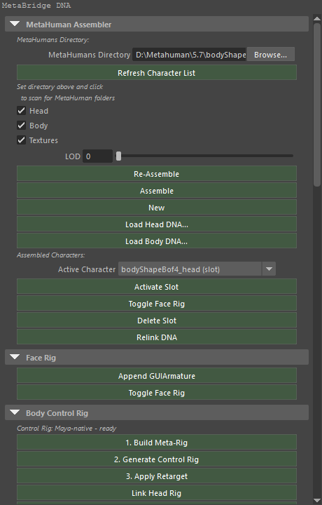
MetaHuman Assembler
Buttons
| Button | Runs |
|---|---|
| Refresh Character List | mmb_mh_scan_dir |
| Re-Assemble | mmb_mh_assemble |
| Assemble | mmb_mh_assemble |
| New | mmb_mh_new |
| Load Head DNA... | mmb_load_head_dna |
| Load Body DNA... | mmb_load_body_dna |
| Activate Slot | mmb_mh_activate_slot |
| Toggle Face Rig | mmb_toggle_face_rig_slot |
| Delete Slot | mmb_mh_delete_slot |
| Relink DNA | mmb_relink_dna |
Settings
| Control | Type | Default | Range | Stored as |
|---|---|---|---|---|
| MetaHumans Directory | Text | — | — | ml_mh_dir |
| Head | Checkbox | on | — | ml_mh_load_head |
| Body | Checkbox | on | — | ml_mh_load_body |
| Textures | Checkbox | on | — | ml_mh_load_textures |
| LOD | Number | 0 |
0 – 7 | ml_lod_level |
Lines the panel draws
- MetaHumans Directory:
- Set directory above and click
- to scan for MetaHuman folders
- Assembled Characters:
Face Rig
Buttons
| Button | Runs |
|---|---|
| Append GUIArmature | mmb_append_gui_armature |
| Toggle Face Rig | mmb_toggle_face_rig_slot |
Rigify Body Control Rig
Buttons
| Button | Runs |
|---|---|
| 1. Build Meta-Rig | mmb_build_metarig_only |
| 2. Generate Control Rig | mmb_generate_rig_only |
| Remove Retarget | mmb_remove_retarget |
| 3. Apply Retarget | mmb_apply_retarget |
| Unlink Head Rig | mmb_unlink_head_rig |
| Link Head Rig | mmb_link_head_rig |
| Toggle RBF Correctives (Body) | mmb_toggle_body_correctives_rbf |
| Body Correctives: none in this DNA | mmb_toggle_body_correctives_rbf |
| Show RBF Controls | mmb_show_rbf_controllers |
| Hide | mmb_hide_rbf_controllers |
| Import FBX Animation... | mmb_import_fbx_animation |
| Remove Control Rig | mmb_remove_cloud_rig |
Settings
| Control | Type | Default | Range | Stored as |
|---|---|---|---|---|
| Driver Bone | Menu | — | built at run time | ml_rbf_driver |
| ["rbf_influence"] | List | — | — | ["rbf_influence"] |
Lines the panel draws
- Rigify: enabled
- Rigify: NOT enabled
- Pick a driver bone above, or select a control and leave it on Auto
- Active RBF Controllers:
Additional Options
Buttons
| Button | Runs |
|---|---|
| Toggle IK Stretch | mmb_toggle_limb_ik_stretch |
| Toggle Heel Pivot | mmb_toggle_foot_spin_pivot |
| Toggle Finger IK | mmb_toggle_finger_ik |
| IK to FK | mmb_finger_ik_fk |
| FK to IK | mmb_finger_ik_fk |
| Snap Fingertip Targets to Pose | mmb_snap_finger_ik |
Settings
| Control | Type | Default | Range | Stored as |
|---|---|---|---|---|
| '["%s"]' % _crb._FINGER_IK_PROP | List | — | — | '["%s"]' % _crb._FINGER_IK_PROP |
Lines the panel draws
- Per-finger (0 = joints, 1 = fingertip)
- Assemble body first
- Enable Rigify: Edit > Preferences > Add-ons
- Search 'Rigify' → Rigging: Rigify → Enable
RNA
Buttons
| Button | Runs |
|---|---|
| Re-Auto Link | mmb_re_auto_link |
| Clear All | mmb_clear_manual |
| Print Full Map (console) | mmb_print_gui_map |
Settings
| Control | Type | Default | Range | Stored as |
|---|---|---|---|---|
| View | Menu | DNA |
DNA = DNA RC View, BONE = Bone View | ml_inspector_mode |
| Filter | Text | — | — | ml_rc_filter2 |
| Show | Menu | ALL |
ALL = All, MAPPED = Mapped, UNMAPPED = Unmapped | ml_rc_show |
| Show Parent | Checkbox | off | — | ml_show_parent |
| Per Page | Number | 25 |
10 – 60 | ml_rc_page_size |
Lines the panel draws
- Per page:
mGear Rig (Maya-only)
Buttons
| Button | Runs |
|---|---|
| One-Click mGear Rig | mmb_mgear_rig - mGear's MetaHuman guide, snapped to the active character, and mGear's Shifter rig built over it |
| Snap mGear Guide | mmb_mgear_snap - put the guide's locators back on the character's joints, for a guide that was placed or edited by hand |
| Bind Head to mGear Rig | mmb_mgear_bind_head - constrain the character's head part to the body joints mGear drives, so the face and the expression sliders follow the rig (the one-click does this already) |
| Unbind Head from mGear Rig | mmb_mgear_unbind_head - take the head constraints out again; the head keeps its own values where it stands |
| Register Anim Picker | mmb_mgear_anim_picker - make mGear's Anim Picker for the MetaHuman rig - the node and the body and face pages - and open it |
| Remove mGear Rig | mmb_mgear_clear - delete the guide and the rigs mGear built; the character stays as it is |
Arnold Look-Dev (Maya-only)
Buttons
| Button | Runs |
|---|---|
| Arnold Look-Dev | mmb_arnold_lookdev - Arnold shaders for the character's materials (the hair included), a key/fill/rim light rig aimed at its face, two cameras framed on it, the render settings a beauty still is rendered at, and a measured exposure - a probe render of the face, solved until the skin lands where a reference still's does, on the GPU |
| Open Arnold RenderView | mmb_arnold_render_view - MtoA's RenderView on the look-dev camera, with its interactive render running |
| Remove Look-Dev | mmb_arnold_lookdev_clear - the character's own shaders back on their sets, the Arnold ones, the rig and both cameras deleted |
2. Animation Baker
Panel key: anim_baker
Bakes the face board's keyed controls across the frame range, so an expression performance becomes baked animation.
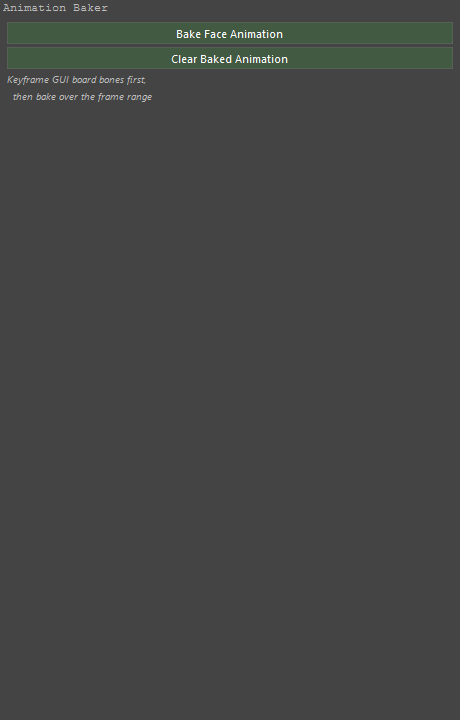
At the top of the panel
Buttons
| Button | Runs |
|---|---|
| Bake Face Animation | mmb_bake_face_animation |
| Clear Baked Animation | mmb_clear_baked_animation |
Lines the panel draws
- Keyframe GUI board bones first,
- then bake over the frame range
3. ARKit Live
Panel key: arkit_live
Takes the 52 ARKit blendshapes Live Link Face streams from an iPhone and drives the expression sliders with them, live.
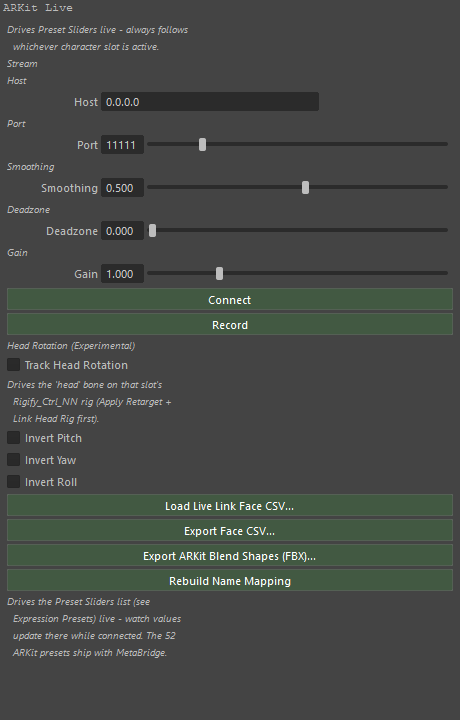
At the top of the panel
Buttons
| Button | Runs |
|---|---|
| Connect | mmb_arkit_connect |
| Record | mmb_arkit_toggle_recording |
| Load Live Link Face CSV... | mmb_arkit_load_csv |
| Export Face CSV... | mmb_export_face_csv |
| Export ARKit Blend Shapes (FBX)... | mmb_export_arkit_blendshapes |
| Rebuild Name Mapping | mmb_arkit_rebuild_mapping |
| Calibrate Neutral Face | mmb_arkit_calibrate_neutral |
| Clear Neutral Calibration | mmb_arkit_clear_calibration |
Settings
| Control | Type | Default | Range | Stored as |
|---|---|---|---|---|
| Host | Text | 0.0.0.0 |
— | ml_arkit_host |
| Port | Number | 11111 |
1 – 65535 | ml_arkit_port |
| Smoothing | Number | 0.5 |
0 – 0.95 | ml_arkit_smoothing |
| Deadzone | Number | 0.0 |
0 – 0.9 | ml_arkit_deadzone |
| Gain | Number | 1.0 |
0.1 – 4 | ml_arkit_gain |
| Track Head Rotation | Checkbox | off | — | ml_arkit_head_tracking |
| Invert Pitch | Checkbox | off | — | ml_arkit_head_invert_pitch |
| Invert Yaw | Checkbox | off | — | ml_arkit_head_invert_yaw |
| Invert Roll | Checkbox | off | — | ml_arkit_head_invert_roll |
Lines the panel draws
- Drives Preset Sliders live - always follows
- whichever character slot is active.
- Stream
- Host
- Port
- Smoothing
- Deadzone
- Gain
- Apply error (see console for full trace):
- Head Rotation (Experimental)
- Drives the 'head' bone on that slot's
- Rigify_Ctrl_NN rig (Apply Retarget +
- Link Head Rig first).
- No Rigify control rig for this slot
- This rig has no 'head' bone to drive
- 'head' bone has a rotation axis LOCKED
- (Item tab > Transform > Rotation - unlock it)
- Head Rig not linked - click 'Link Head Rig' above
- Linked, but 'head' bone isn't in the retarget
- handler - try Unlink then Link Head Rig again
- Head Rig linked - ready
- No head rotation data in this stream
- Drives the Preset Sliders list (see
- Expression Presets) live - watch values
- update there while connected. The 52
- ARKit presets ship with MetaBridge.
4. Batch Tools
Panel key: batch_tools
Runs the two jobs that are worth doing to a whole folder: assemble every character, and export every slot.
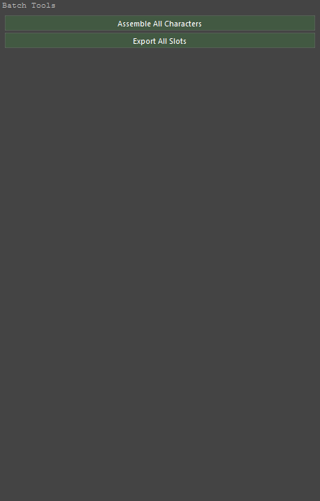
At the top of the panel
Buttons
| Button | Runs |
|---|---|
| Assemble All Characters | mmb_batch_assemble |
| Export All Slots | mmb_batch_export |
5. Body Blend (experimental)
Panel key: body_blend
Averages several bodies (DNA files or library archetypes) by weight into one new character.
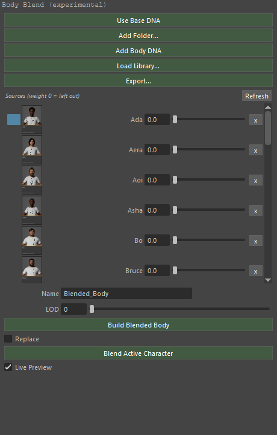
At the top of the panel
Buttons
| Button | Runs |
|---|---|
| Use Base DNA | mmb_add_base_dna |
| Add Folder... | mmb_add_body_folder |
| Add Body DNA | mmb_add_body_source |
| Load Library... | mmb_load_archetype_library |
| Export... | mmb_export_archetype_library |
| Build Blended Body | mmb_build_blended_body |
| Blend Active Character | mmb_blend_active_character |
Settings
| Control | Type | Default | Range | Stored as |
|---|---|---|---|---|
| Ml Body Blend Name | Text | Blended_Body |
— | ml_body_blend_name |
| LOD | Number | 0 |
0 – 7 | ml_body_blend_lod |
| Replace | Checkbox | off | — | ml_body_blend_replace |
| Live Preview | Checkbox | on | — | ml_body_blend_live_preview |
6. Send to Cascadeur
Panel key: cascadeur
Sends the character or its animation to Cascadeur over localhost, and mirrors this rig onto the Cascadeur scene live.
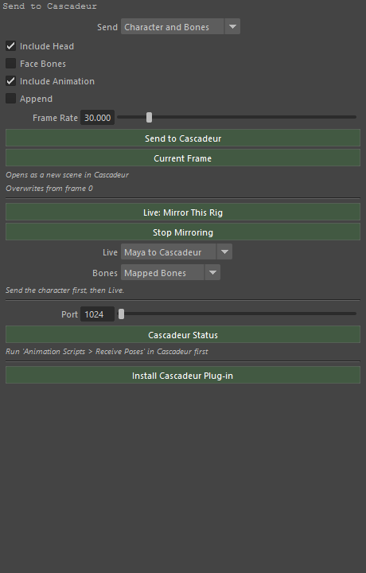
At the top of the panel
Buttons
| Button | Runs |
|---|---|
| Send to Cascadeur | mmb_cascadeur_send |
| Current Frame | mmb_cascadeur_send |
| Live: Mirror This Rig | mmb_cascadeur_live_pose |
| Stop Mirroring | mmb_cascadeur_stop_live |
| Cascadeur Status | mmb_cascadeur_status |
| Install Cascadeur Plug-in | mmb_install_cascadeur_plugin |
Settings
| Control | Type | Default | Range | Stored as |
|---|---|---|---|---|
| Send | Menu | CHARACTER |
CHARACTER = Character and Bones, KEYS = Keyframes Only | ml_casc_mode |
| Include Head | Checkbox | on | — | ml_casc_send_head |
| Face Bones | Checkbox | off | — | ml_casc_face_bones |
| Include Animation | Checkbox | on | — | ml_casc_send_anim |
| Append | Checkbox | off | — | ml_casc_append |
| Frame Rate | Number | 30.0 |
1 – 240 | ml_casc_fps |
| Live | Menu | OUT |
OUT = Maya to Cascadeur, IN = Cascadeur to Maya, BOTH = Both Ways | ml_casc_live_way |
| Bones | Menu | ROLES |
ROLES = Mapped Bones, ALL = Whole Skeleton | ml_casc_live_bones |
| Port | Number | — | 1024 – 65535 | ml_casc_port |
Lines the panel draws
- Opens as a new scene in Cascadeur
- Overwrites from frame 0
- Send the character first, then Live.
- Run 'Animation Scripts > MetaBridge Live' in Cascadeur first
7. DNA Validation
Panel key: validation
Reads a DNA file, or the active slot's own, and reports what is wrong with it before the rest of the pipeline meets it.
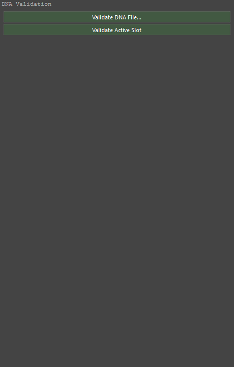
At the top of the panel
Buttons
| Button | Runs |
|---|---|
| Validate DNA File... | mmb_validate_dna_file |
| Validate Active Slot | mmb_validate_active_slot |
8. Export (DNA / FBX / glTF)
Panel key: exporter
Writes the active character out: head and body as DNA, the character as FBX, or as glTF.
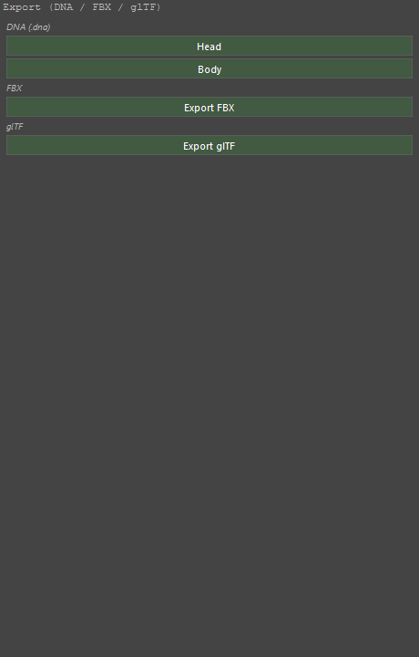
At the top of the panel
Buttons
| Button | Runs |
|---|---|
| Head | mmb_export_head_dna |
| Body | mmb_export_body_dna |
| Export FBX | mmb_export_slot_fbx |
| Export glTF | mmb_export_slot_gltf |
Lines the panel draws
- DNA (.dna)
- FBX
- glTF
9. MD Live
Panel key: md_live
The Marvelous Designer round trip through one shared folder: an avatar out, a garment back, live on demand.
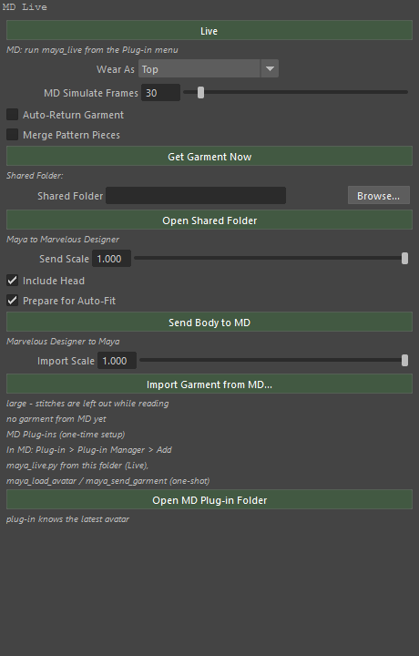
At the top of the panel
Buttons
| Button | Runs |
|---|---|
| Live | mmb_md_live |
| Get Garment Now | mmb_md_request_garment |
| Open Shared Folder | mmb_md_open_folder |
| Send Body to MD | mmb_md_send_body |
| Import Garment from MD... | mmb_md_import_garment |
| Open MD Plug-in Folder | mmb_md_open_plugin_folder |
Settings
| Control | Type | Default | Range | Stored as |
|---|---|---|---|---|
| Wear As | Menu | — | built at run time | ml_md_live_category |
| MD Simulate Frames | Number | 30 |
0 – 500 | ml_md_sim_steps |
| Auto-Return Garment | Checkbox | — | — | ml_md_auto_return |
| Merge Pattern Pieces | Checkbox | off | — | ml_md_merge_pieces |
| Shared Folder | Text | — | — | ml_md_folder |
| MD Scale | Number | 1000.0 |
0.001 | ml_md_scale |
| Include Head | Checkbox | on | — | ml_md_send_head |
| Prepare for Auto-Fit | Checkbox | on | — | ml_md_prepare_autofit |
| Import Scale | Number | 100.0 |
0.001 | ml_md_import_scale |
Lines the panel draws
- MD: run maya_live from the Plug-in menu
- Shared Folder:
- Maya to Marvelous Designer
- Marvelous Designer to Maya
- large - stitches are left out while reading
- no garment from MD yet
- MD Plug-ins (one-time setup)
- In MD: Plug-in > Plug-in Manager > Add
- maya_live.py from this folder (Live),
- maya_load_avatar / maya_send_garment (one-shot)
- plug-in knows the latest avatar
10. Expression Presets
Panel key: pose_presets
Expression presets as files: save the face board's dial values, put them back, and blend several at once as sliders.
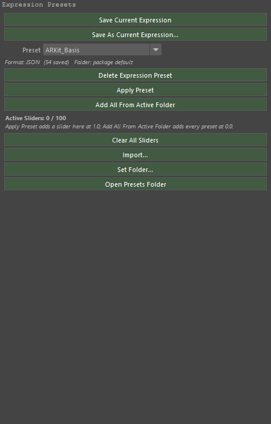
At the top of the panel
Buttons
| Button | Runs |
|---|---|
| Save Current Expression | mmb_save_pose_preset_overwrite |
| Save As Current Expression... | mmb_save_pose_preset |
| Delete Expression Preset | mmb_delete_pose_preset |
| Apply Preset | mmb_apply_pose_preset |
| Add All From Active Folder | mmb_add_folder_sliders |
| Clear All Sliders | mmb_clear_preset_sliders |
| Import... | mmb_import_pose_preset |
| Set Folder... | mmb_select_preset_folder |
| Open Presets Folder | mmb_open_preset_folder |
Settings
| Control | Type | Default | Range | Stored as |
|---|---|---|---|---|
| Preset | Menu | — | built at run time | ml_preset_enum |
11. External Preset Converter
Panel key: preset_converter
Brings a preset from another tool in - a Maya or Houdini preset, or an ARKit payload - by matching its names onto the board's controls.
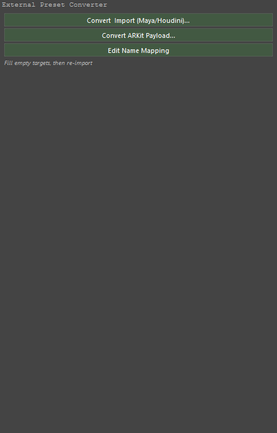
At the top of the panel
Buttons
| Button | Runs |
|---|---|
| Convert & Import (Maya/Houdini)... | mmb_convert_import_preset |
| Convert ARKit Payload... | mmb_convert_arkit_payload |
| Edit Name Mapping | mmb_edit_name_mapping |
Lines the panel draws
- Fill empty targets, then re-import
12. Proportions
Panel key: proportions
The body sliders: leg, torso and arm length, shoulder, waist and chest width, and heel and front height for shoes. A slider that moves moves the character.
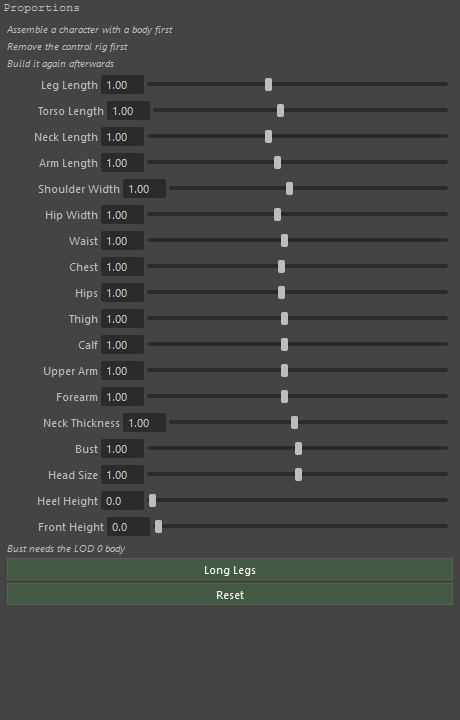
At the top of the panel
Buttons
| Button | Runs |
|---|---|
| Long Legs | mmb_proportion_preset |
| Reset | mmb_proportion_preset |
Settings
| Control | Type | Default | Range | Stored as |
|---|---|---|---|---|
| Leg Length | Number | 1.0 |
0.8 – 1.3 | leg |
| Torso Length | Number | 1.0 |
0.85 – 1.2 | torso |
| Neck Length | Number | 1.0 |
0.8 – 1.3 | neck |
| Arm Length | Number | 1.0 |
0.85 – 1.2 | arm |
| Shoulder Width | Number | 1.0 |
0.85 – 1.2 | shoulder |
| Hip Width | Number | 1.0 |
0.85 – 1.2 | hip |
| Waist | Number | 1.0 |
0.75 – 1.3 | waist |
| Chest | Number | 1.0 |
0.8 – 1.25 | chest |
| Hips | Number | 1.0 |
0.8 – 1.25 | hips |
| Thigh | Number | 1.0 |
0.75 – 1.3 | thigh |
| Calf | Number | 1.0 |
0.75 – 1.3 | calf |
| Upper Arm | Number | 1.0 |
0.75 – 1.3 | upper_arm |
| Forearm | Number | 1.0 |
0.75 – 1.3 | forearm |
| Neck Thickness | Number | 1.0 |
0.8 – 1.25 | neck_girth |
| Bust | Number | 1.0 |
0.5 – 1.5 | bust |
| Head Size | Number | 1.0 |
0.9 – 1.1 | head |
| Heel Height | Number | 0.0 |
0 – 15 | heel |
| Front Height | Number | 0.0 |
0 – 5 | platform |
Lines the panel draws
- Assemble a character with a body first
- Remove the control rig first
- Build it again afterwards
- Bust needs the LOD 0 body
13. Pose Reset
Panel key: pose_reset
Puts the face board back to neutral - all of it, or only the controls that are selected.
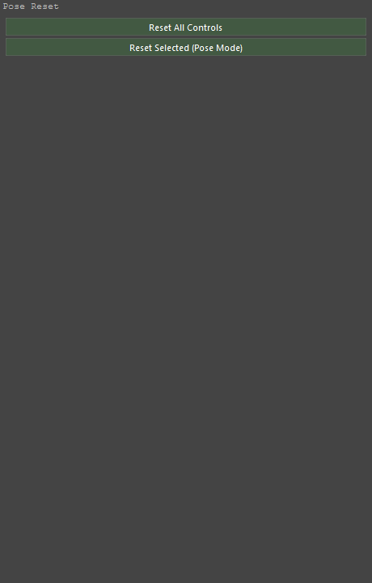
At the top of the panel
Buttons
| Button | Runs |
|---|---|
| Reset All Controls | mmb_reset_face_pose |
| Reset Selected (Pose Mode) | mmb_reset_selected_controls |
14. Retarget Rigify Animation (Beta)
Panel key: rig_retarget
Retargets an animation from another rig (UE5, Mixamo, MetaHuman, Rigify) onto this character, onto HumanIK, or onto the mGear rig.
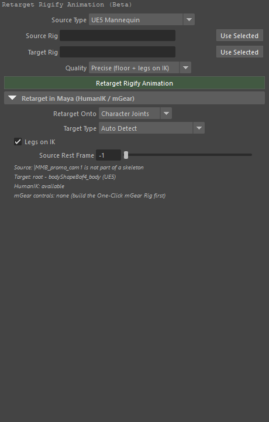
At the top of the panel
Buttons
| Button | Runs |
|---|---|
| Retarget Rigify Animation | mmb_retarget_rigify_animation |
Settings
| Control | Type | Default | Range | Stored as |
|---|---|---|---|---|
| Source Type | Menu | UE5 |
built at run time | ml_retarget_source_type |
| Source Rig | Node picker | — | — | ml_retarget_source_rig |
| Target Rig | Node picker | — | — | ml_retarget_target_rig |
| Quality | Menu | PRECISE |
built at run time | ml_retarget_quality |
Retarget in Maya (HumanIK / mGear)
Settings
| Control | Type | Default | Range | Stored as |
|---|---|---|---|---|
| Retarget Onto | Menu | JOINTS |
JOINTS = Character Joints, HUMANIK = HumanIK (Maya), MGEAR = mGear Controls | ml_retarget_target_mode |
| Target Type | Menu | AUTO |
built at run time | ml_retarget_target_type |
| Legs on IK | Checkbox | on | — | ml_retarget_legs_ik |
| Source Rest Frame | Number | -1 |
-1 – 1000 | ml_retarget_rest_frame |
15. Live Corrective Sculpting (Beta)
Panel key: sculpt_correctives
Sculpt the skin in a pose, keep the difference as a named corrective, and sync it to worn clothing.
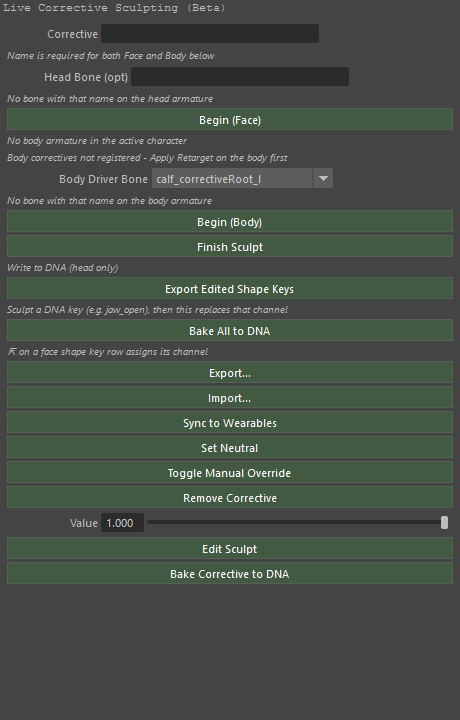
At the top of the panel
Buttons
| Button | Runs |
|---|---|
| Begin (Face) | mmb_sculpt_corrective_begin |
| Begin (Body) | mmb_sculpt_corrective_begin |
| Finish Sculpt | mmb_sculpt_corrective_finish |
| Export Edited Shape Keys | mmb_export_edited_shape_keys |
| Bake All to DNA | mmb_bake_all_correctives_to_dna |
| Export... | mmb_export_correctives |
| Import... | mmb_import_correctives |
| Sync to Wearables | mmb_sync_correctives_to_garments |
| Set Neutral | mmb_sculpt_corrective_set_neutral |
| Toggle Manual Override | mmb_sculpt_corrective_toggle_manual |
| Remove Corrective | mmb_sculpt_corrective_remove |
| Edit Sculpt | mmb_sculpt_corrective_edit |
| Bake Corrective to DNA | mmb_bake_corrective_to_dna |
Settings
| Control | Type | Default | Range | Stored as |
|---|---|---|---|---|
| Corrective | Text | — | — | ml_lcs_name |
| Head Driver Bone | Text | — | — | ml_lcs_head_bone |
| Body Driver Bone | Menu | — | built at run time | ml_lcs_body_bone |
| Value | Number | 1.0 |
0 – 1 | value |
Lines the panel draws
- Name is required for both Face and Body below
- No bone with that name on the head armature
- No body armature in the active character
- Body correctives not registered - Apply Retarget on the body first
- No bone with that name on the body armature
- Write to DNA (head only)
- Sculpt a DNA key (e.g. jaw_open), then this replaces that channel
- ⇱ on a face shape key row assigns its channel
16. Unreal Live
Panel key: unreal_live
Streams the face to Unreal Engine as it is worked on, so the MetaHuman there performs with this one.
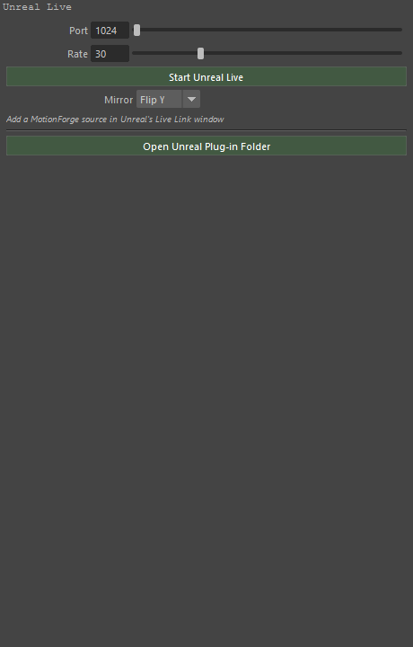
At the top of the panel
Buttons
| Button | Runs |
|---|---|
| Start Unreal Live | mmb_unreal_live_start |
| Stop Unreal Live | mmb_unreal_live_stop |
| Open Unreal Plug-in Folder | mmb_open_unreal_plugin_folder |
Settings
| Control | Type | Default | Range | Stored as |
|---|---|---|---|---|
| Port | Number | — | 1024 – 65535 | ml_unreal_live_port |
| Rate | Number | 30 |
1 – 120 | ml_unreal_live_fps |
| Mirror | Menu | Y |
NONE = None, X = Flip X, Y = Flip Y, Z = Flip Z | ml_unreal_live_mirror |
Lines the panel draws
- Load a character first
- Add a MotionForge source in Unreal's Live Link window
17. Follow Unreal
Panel key: unreal_follow
The other direction: this character follows a MetaHuman Unreal is animating.
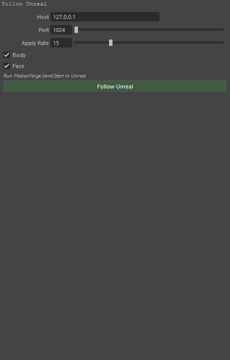
At the top of the panel
Buttons
| Button | Runs |
|---|---|
| Follow Unreal | mmb_unreal_follow_start |
| Stop Following | mmb_unreal_follow_stop |
Settings
| Control | Type | Default | Range | Stored as |
|---|---|---|---|---|
| Host | Text | 127.0.0.1 |
— | ml_unreal_follow_host |
| Port | Number | — | 1024 – 65535 | ml_unreal_follow_port |
| Apply Rate | Number | 15 |
1 – 60 | ml_unreal_follow_rate |
| Body | Checkbox | on | — | ml_unreal_follow_body |
| Face | Checkbox | on | — | ml_unreal_follow_face |
Lines the panel draws
- Run MotionForge.Send.Start in Unreal
- Rigify is stood down while following
18. Wearables (experimental)
Panel key: wearables
Clothing, hair and accessories on the character: import, make a garment rig, bind, and refit when the body changes.
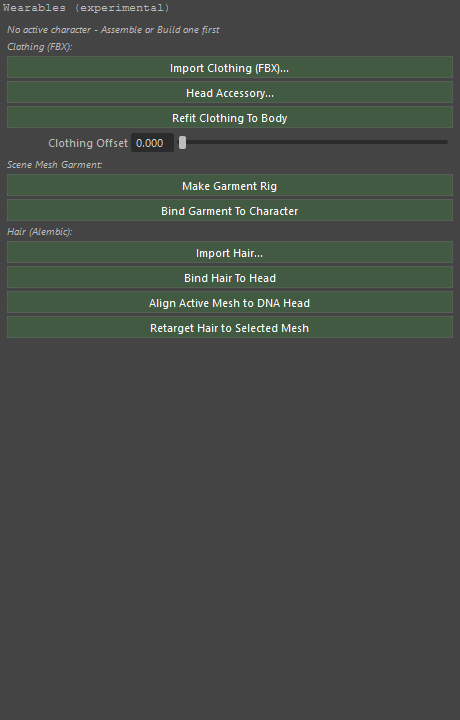
At the top of the panel
Buttons
| Button | Runs |
|---|---|
| Import Clothing (FBX)... | mmb_import_clothing_fbx |
| Head Accessory... | mmb_import_clothing_fbx |
| Refit Clothing To Body | mmb_refit_wearables |
| Make Garment Rig | mmb_make_garment_rig |
| Bind Garment To Character | mmb_bind_garment |
| Import Hair... | mmb_import_hair_abc |
| Apply Hair Offset / Scale | mmb_apply_hair_offset |
| Bind Hair To Head | mmb_bind_hair_to_head |
| Align Active Mesh to DNA Head | mmb_align_mesh_to_dna_head |
| Retarget Hair to Selected Mesh | mmb_retarget_hair |
Settings
| Control | Type | Default | Range | Stored as |
|---|---|---|---|---|
| Clothing Offset | Number | — | 0 – 0.02 | ml_wearable_fit_margin |
| Import | Menu | ALL |
ALL = Guides + Strands, STRANDS = Strands only, GUIDES = Guides only | ml_hair_kind |
| Hair Strands (0 = all) | Number | 10000 |
0 – 400000 | ml_hair_max_strands |
| Hair Offset X | Number | 0.0 |
-100 – 100 | ml_hair_offset_x |
| Hair Offset Y | Number | 0.0 |
-100 – 100 | ml_hair_offset_y |
| Hair Offset Z | Number | 0.0 |
-100 – 100 | ml_hair_offset_z |
| Hair Scale | Number | 1.0 |
0.1 – 3 | ml_hair_scale |
Lines the panel draws
- No active character - Assemble or Build one first
- Clothing (FBX):
- Scene Mesh Garment:
- Hair (Alembic -> XGen groom):
Fit to Skin (Maya-only)
Buttons
| Button | Runs |
|---|---|
| Fit Clothing to Skin | mmb_fit_clothing_to_skin - push the selected clothing (or what is worn) out of the character's skin: any vertex inside it, or closer than the Clothing Offset, is moved out along the skin's normal |